A network security monitor for Windows, macOS and Linux that shows every program sending data out of your computer, scores it against threat intelligence and known exploits, explains what it sees in plain language, and lets you act on it in one click.
Generative AI has turned writing malware, infostealers and phishing kits from weeks of work into minutes. Attacks are cheaper, faster and more numerous than before, and they reach ordinary computers, not only companies with a security team. The first visible sign is almost always the same: a program quietly sending data out. Most people have no way to see that happening on their own machine.
SherWatch was designed and directed by Sher Khan and written with Claude Code, Anthropic's AI coding agent, as a pair-programming partner. The tools that make attacks cheap make defence cheap too: a per-process monitor with 28 rules, a live globe and three desktop ports, by one person and an AI pair programmer. It is open source under Apache 2.0, so every rule it applies can be read and checked rather than taken on trust.
The analyst assistant inside the dashboard is a separate feature: it explains what the monitor sees, with a model you choose (free web model, local Ollama, or your own key).
Live table of all TCP and UDP flows with the owning process, signature, destination, hostname, country, bytes and age. Captured from the operating system's own accounting (ETW on Windows, nettop on macOS, ss on Linux), not a packet sniffer.
28 rules: threat-feed matches, beaconing, exfiltration, DNS tunnelling, algorithm-generated domains, living-off-the-land tools, masquerading, unsigned software, suspicious locations, new listeners.
Any program not on your approved list that uploads more than a few MB, or uploads to a file-sharing service, raises a critical alert within seconds.
Feodo, Spamhaus, IPsum, Tor exits, OpenPhish, Blackbook and CISA's exploited-vulnerability catalogue refresh on a schedule. New sources arrive through a manifest; the app tells you when it needs a code update.
Installed programs and services are matched against CISA KEV and, optionally, published CVEs for the exact version, with a judgement on whether the fix is likely installed.
Terminate, block an address in the system firewall (Windows Defender Firewall, a pf table on macOS, an nftables set on Linux), trust a file by hash. Every action is written to an audit log and can be reverted from the Settings page.
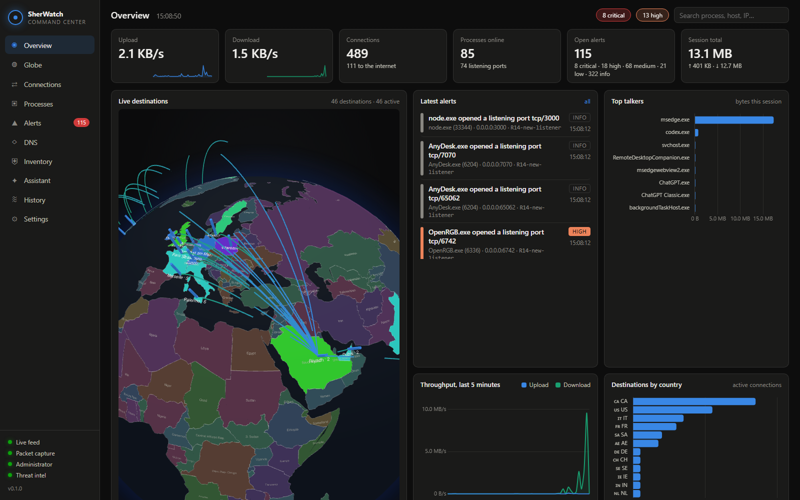
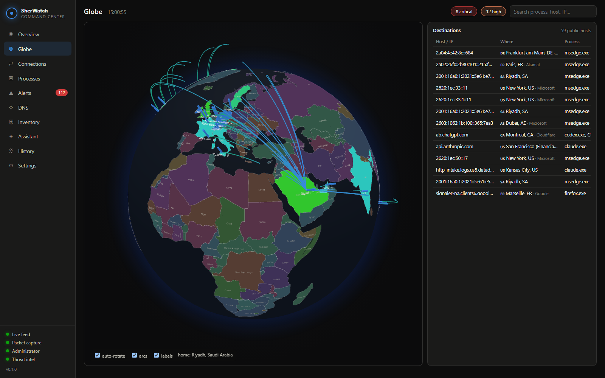
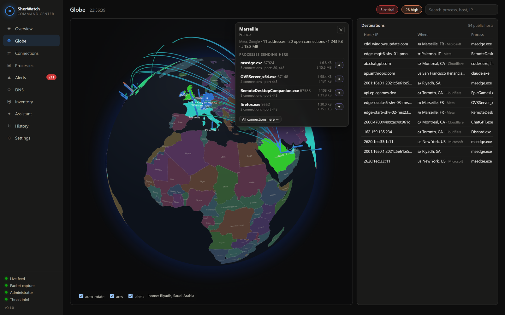
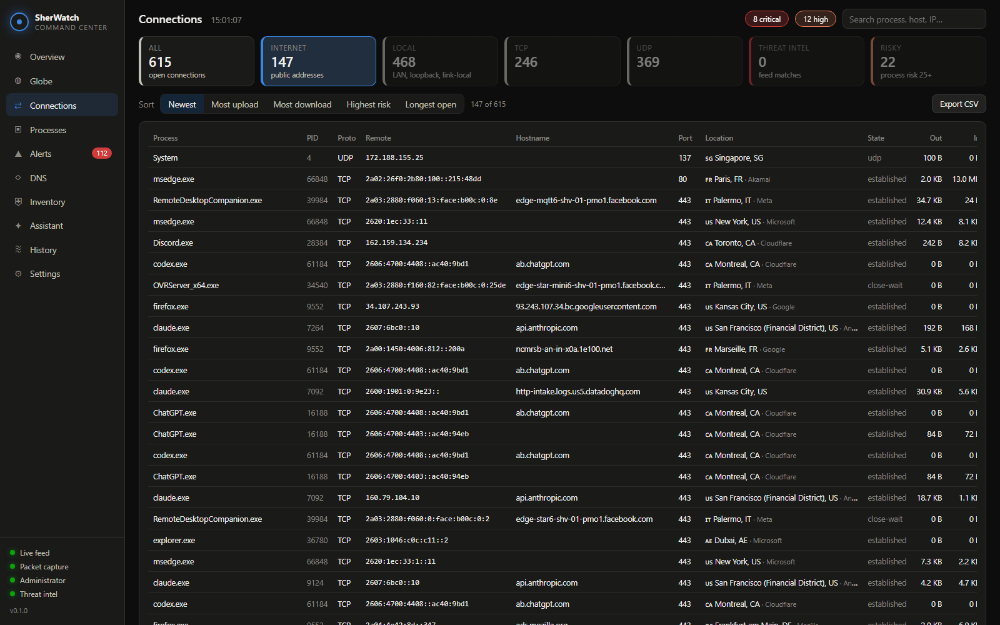
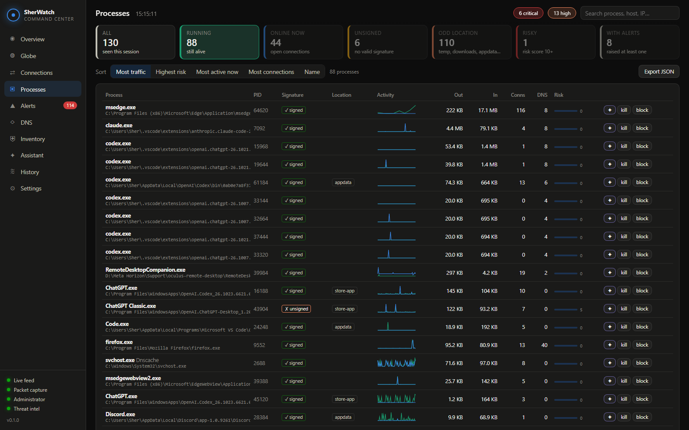
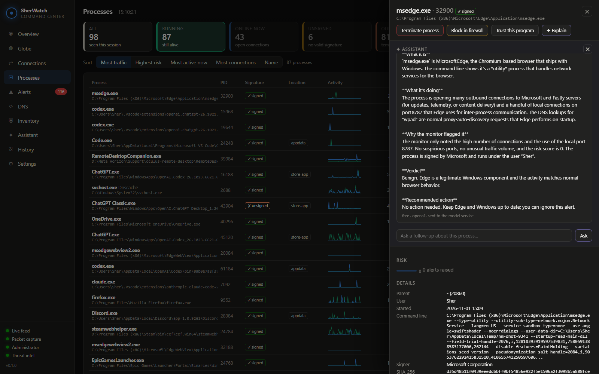
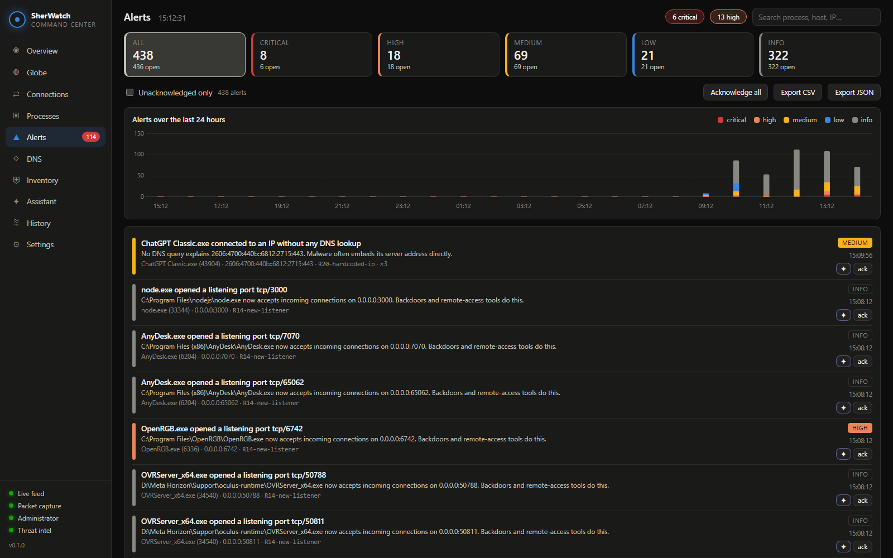
| Rule | Sev | Looks for | Rule | Sev | Looks for |
|---|---|---|---|---|---|
| R01 / R02 | critical | IP or domain listed in a threat feed | R15 | high | Hosts-file hijack or blocked security vendor |
| R04 | medium | Unsigned or invalid-signature program on the internet | R16 | low | Connection to a watch-list country |
| R05 | high | Network program in Temp, Downloads, Desktop, Recycle Bin… | R17 | medium | Fan-out: 100+ hosts in a minute (scan, spray, P2P) |
| R06 | high | Living-off-the-land binary (certutil, mshta, rundll32…) online | R18 | low | Session open for over six hours on an odd port |
| R07 | high | Suspicious destination port: SMB, RDP, IRC, Tor, miners, SOCKS… | R19 | high | Network child of Office, Acrobat or a script host |
| R08 | medium | Program bypassing the system resolver (own DNS) | R20 | medium | Unsigned program using an IP no DNS query explains |
| R09 | high | Beaconing: regular timer-like check-ins | R21 | critical | VirusTotal detections for an unsigned file |
| R10 | high | Large upload volume per minute / five minutes | R22 | high | Unsigned program accepting connections from other machines |
| R11 | high | DNS tunnelling patterns | R23 | critical | Process named like svchost, lsass, launchd, systemd… outside the system folders |
| R12 | medium | Algorithm-generated domain names | R24 / R25 | high | Exploited software likely unpatched; OS updates stale |
| R13 | info | New application on the network (first time ever) | R26 | high | Published CVEs for the exact installed version |
| R14 | high | New listening port (info for signed software) | R27 / R28 | critical | File leaving the PC; upload to a file-sharing service |
Severities feed a per-process risk score that decays over time. Every threshold is editable on the Settings page; nothing is hard-coded. Trusting a file by hash silences the signature and location rules for that exact file only. The rules are the same on every platform; the five that read DNS queries (R02, R08, R11, R12, R20) need the DNS capture, which exists on Windows today.
Any program not on the approved-uploader list (OneDrive by default) that sends more than the threshold (5 MB in a minute, editable) to public addresses raises a critical alert naming the program, the amount and what to do. Backup clients, video calls and AI coding tools will trip it until you approve them deliberately.
51 built-in services (WeTransfer, Mega, Dropbox, GoFile, transfer.sh, Pastebin, the Telegram API, Discord, S3…) matched by hostname and by address, re-resolved on a schedule. A real upload is critical; merely browsing the site stays silent. The list and threshold are editable.
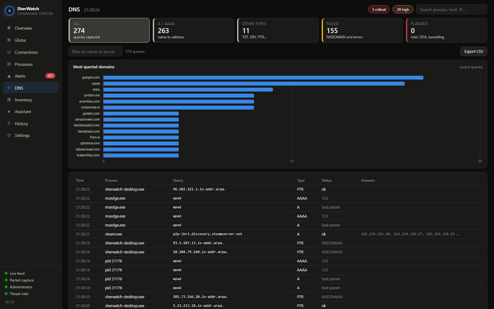
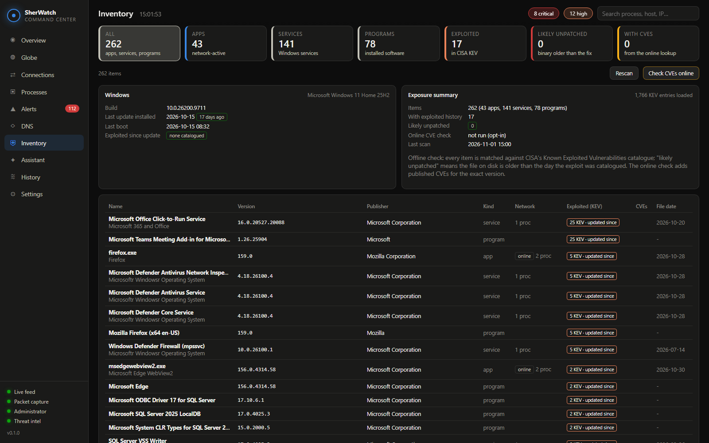
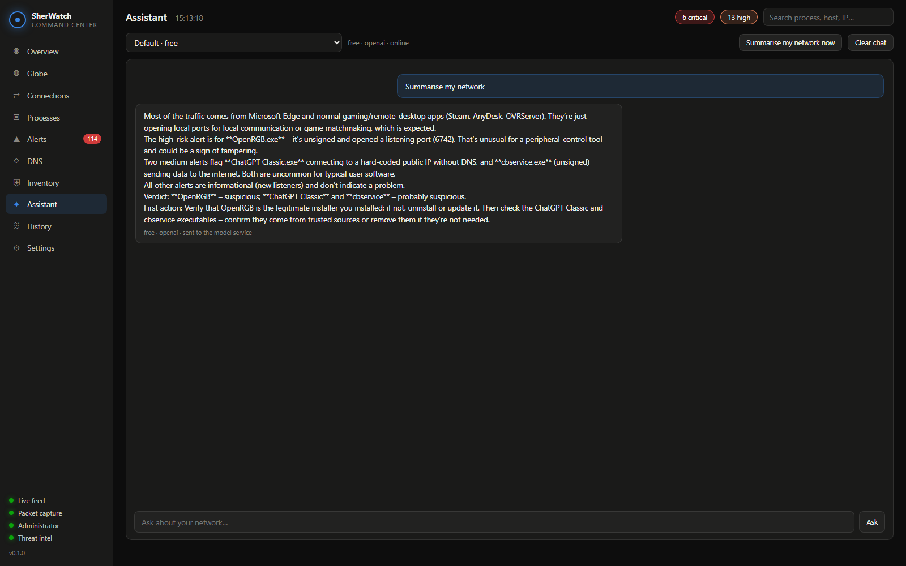
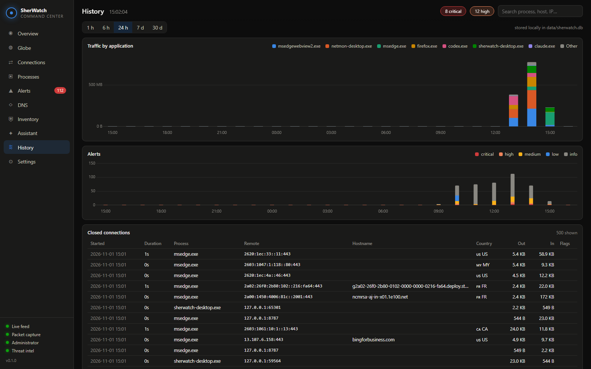
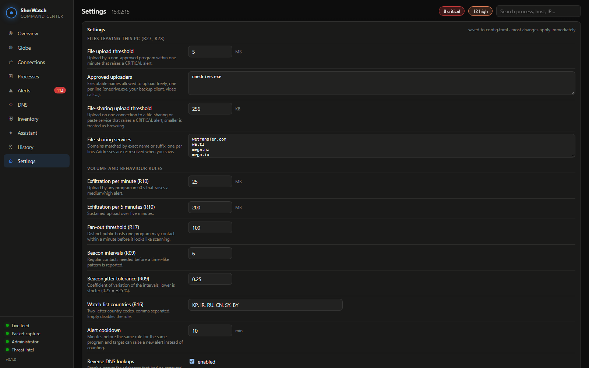
Per-process bytes from the OS's own accounting: the kernel network trace (ETW) on Windows, nettop on macOS, ss on Linux; socket tables polled every second; process inspector with signature checks (Authenticode, codesign, package ownership) and hashing; reverse DNS; DNS capture on Windows; optional VirusTotal.
Rules run every two seconds over a snapshot: feeds, GeoIP, timing windows for beacons and fan-out, DNS windows, inventory matching every 30 minutes.
SQLite with a batching writer; feeds and the KEV catalogue cached on disk and refreshed on a schedule; manifest-driven feed additions.
One Rust library, two thin binaries: a browser version and a Tauri desktop app with tray icon and single instance, packaged as an NSIS installer, a .dmg and .deb/.AppImage. Same dashboard, no drift.
| Windows | macOS | Linux | |
|---|---|---|---|
| Connections per process | OS TCP/UDP table | libproc | /proc |
| Byte counts | ETW kernel-network trace, driverless | polling nettop | polling ss (iproute2), TCP only |
| DNS capture | ETW DNS-Client | not yet | not yet |
| Elevation | UAC prompt, relaunches itself | sudo (run.sh) for all-process byte counts; desktop app unprivileged, only firewall actions prompt | sudo (run.sh) for other users' sockets and bytes; desktop app unprivileged, only firewall actions prompt |
| Code signature | Authenticode, incl. catalog-signed files | codesign (Apple, Developer ID) | package ownership (dpkg/rpm), not a cryptographic check |
| Block | IP and program, Windows Defender Firewall | IP, pf table (anchor com.sherkhan.sherwatch); no per-program rules | IP, nftables set (iptables fallback); no per-program rules |
| Inventory and exploit exposure | services, installed programs, hotfix age; Windows + apps in CISA KEV | launchctl, system_profiler, softwareupdate history; macOS + apps | systemd, dpkg/rpm/flatpak, package-manager age; kernel + apps |
| Desktop package | NSIS installer (WebView2) | .dmg, unsigned: right-click, Open | .deb / .AppImage (needs libwebkit2gtk-4.1, libayatana-appindicator3) |
SherWatch_0.1.0_x64-setup.exeSherWatch_0.1.0_aarch64.dmgSherWatch_0.1.0_x64.dmgSherWatch_0.1.0_amd64.debSherWatch_0.1.0_amd64.AppImageOne code base: the rules, the dashboard, the database and the assistant are shared; only the folder src/platform differs per OS. GitHub Actions checks every push on all three systems and builds the five packages for every tagged release.
Install the package for your system: the -setup.exe on Windows, the .dmg on macOS (first launch: right-click, Open), the .deb or .AppImage on Linux. Start SherWatch like any app; on Windows accept the administrator prompt. The window opens on the Overview; closing it keeps monitoring in the tray, Quit stops it.
Run run.cmd (Windows) or ./run.sh (macOS and Linux, asks for sudo) in the project folder. The server starts and the dashboard opens at http://127.0.0.1:8787/ in your browser.
User guide, detection rules, architecture, building, updating and third-party notices live in the docs/ folder of the public repository github.com/gokukhan/SherWatch. SherWatch is open source under the Apache License 2.0: clone it, build it, read every rule; free for personal and commercial use, keep the credit.
Available for Windows, macOS and Linux.